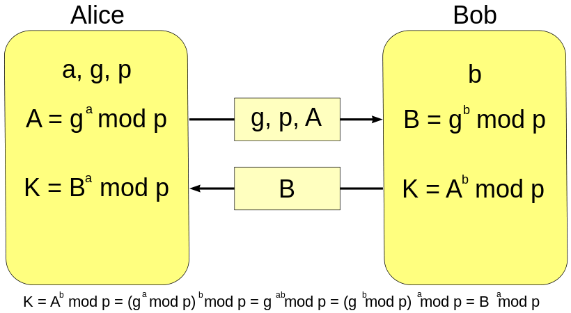

Toutes les données échangées entre les applications et le serveur sont cryptées via Diffie-Hellman. Chaque machine définie un paramètre qu'elles s'échangent pour générer une même clef de cryptage secrète avec laquelle elles crypteront et décrypteront tout les messages.
Ceci permet de prévenir les attaques du type "Man in the middle" (l'homme du milieu) en ne laissant pas les données transiter en clair.

Les mots de passe sont "salés" et "hashés" en utilisant la librairie bCrypt qui permet d'augmenter la compléxitée de l'algorithme de hashage pour une sécurité acccrue. Ce système permet de prévenir notament des attaques du type brute force, rainbow tables et attaques par dictionnaire.
Le résultat est le stockage dans la base d'une empreinte du mot de passe. Quand une tentative de connection sera effectuée, le mot de passe entré subira les mêmes operations et sera comparé a l'empreinte correspondant au login se trouvant dans la base. Si les empreintes correspondent alors les mots de passe sont les mêmes et l'utilisateur est authentifié.